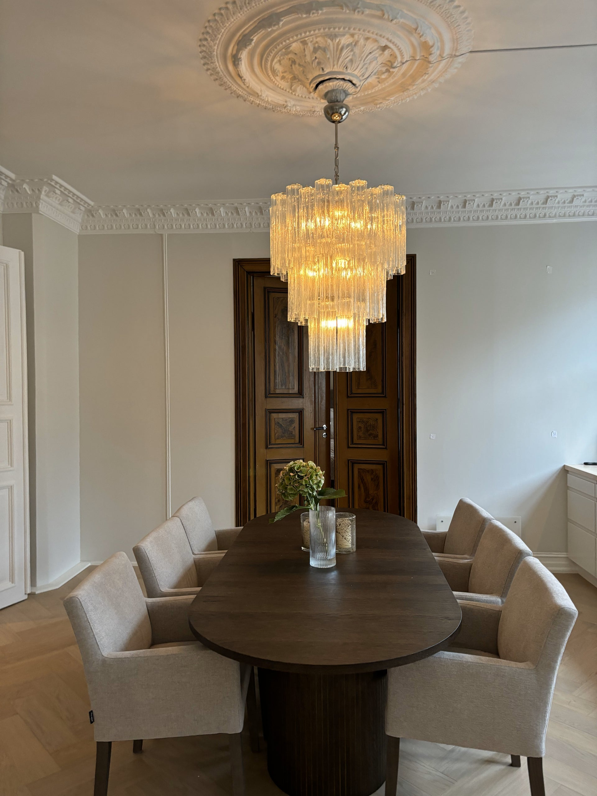

Murano · Venezia · Vetro Soffiato
Lysekronen.
48 klare glassrør.
Håndblåst på øya Murano, slik det har vært gjort i over syv hundre år. Førtiåtte glassrør, formet én etter én i glødende ovner – ingen er like, og nettopp derfor finnes det ingen replika. Ikke i noen butikk. Ikke til noen pris. Dette er ikke en lampe man kjøper. Det er en lampe man blir betrodd.
- OpprinnelseHåndlaget i Italia
- UtgaveEtt eksemplar – ett hjem
- ReplikaerEksisterer ikke
- LysrefleksjonUforlignelig
- PrisPå forespørsel
La luce è tutto. — Lyset er alt.